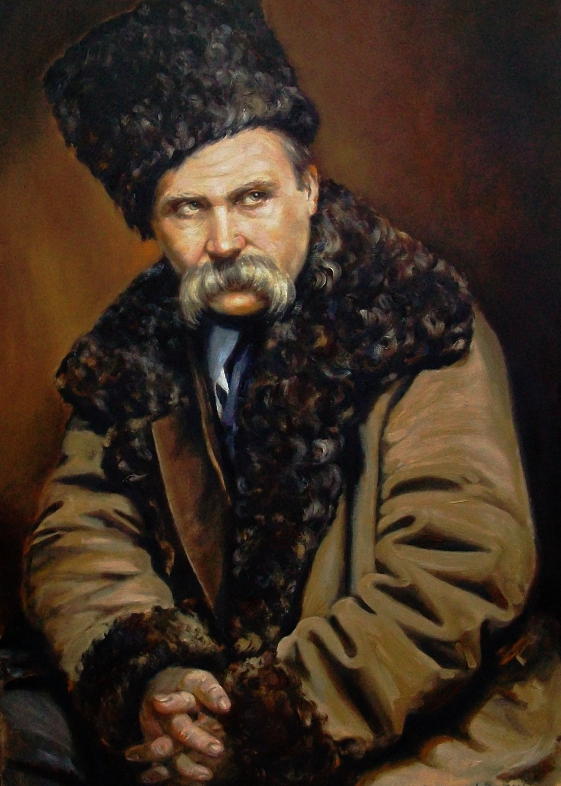
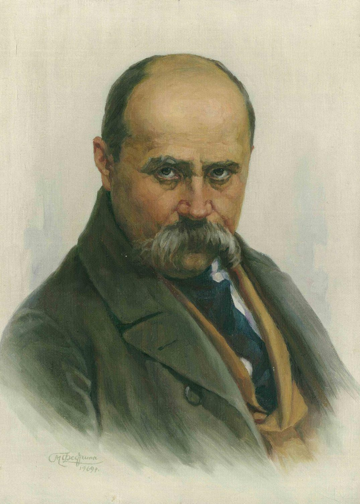
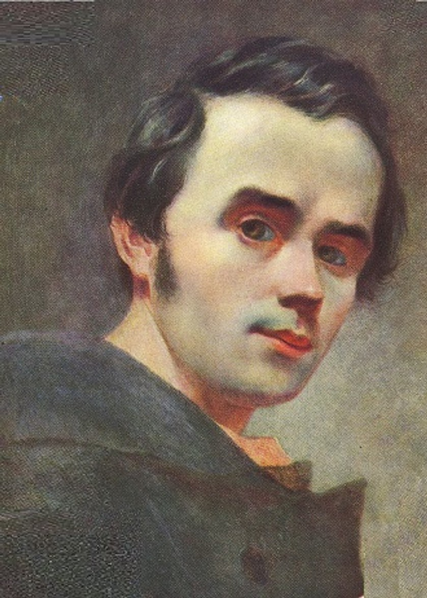
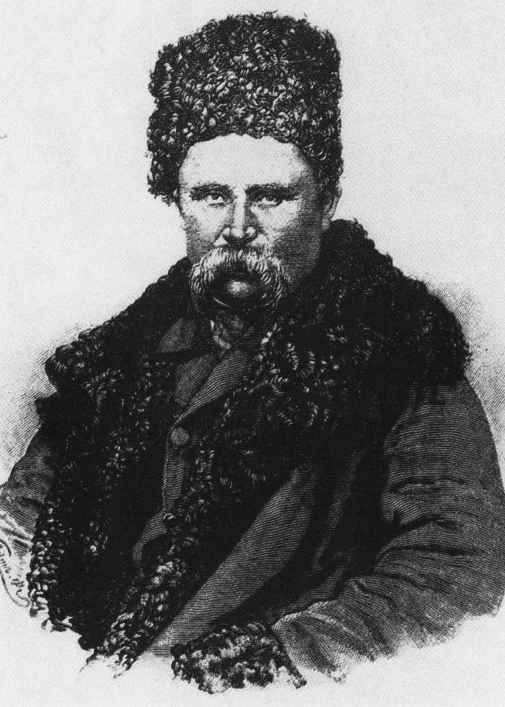

Taras Shevchenko is a national poet, artist, and freedom fighter for the Ukrainian people. Born into a serf family, he gained freedom thanks to the support of patrons. His collection "Kobzar" became a symbol of the Ukrainian struggle for independence. In his works, Shevchenko exposed social injustice, called for the fight against oppression, and celebrated the beauty of his native land. He was exiled for his activities, but even there he did not stop writing. His work has had a huge impact on Ukrainian culture and national identity

